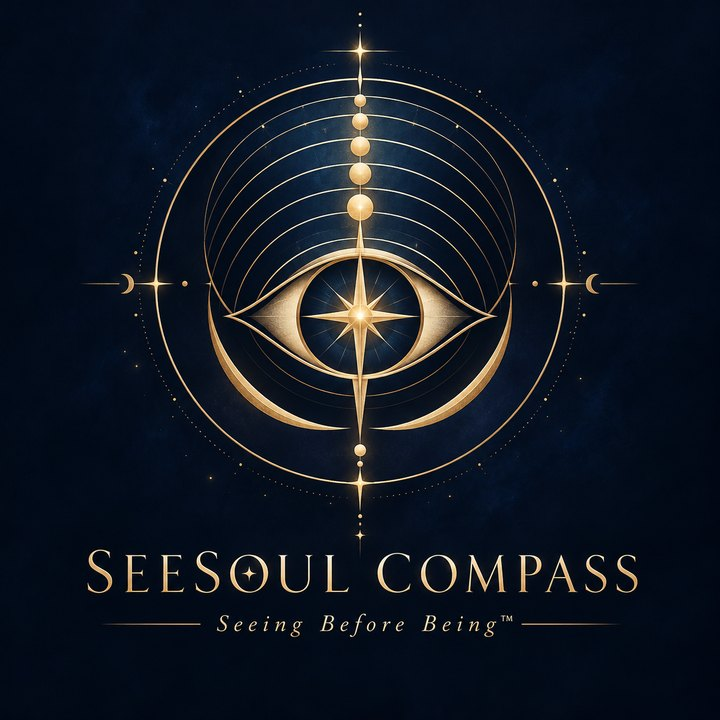

SEESOUL COMPASS™ · Seven layers of seeing
Begin with one thing that has been sitting on your mind.
It may be a relationship, a decision, or a state you cannot quite name. Seven light questions help you separate what happened, what you feel, and what you think.
About 3–5 minutes · free · not a psychological test or diagnosis · you can skip or leave at any time
The questions and notes are still in Chinese. This page explains what you will do before you start.
Start in Chinese →What you will do
- Start from life: choose one recent matter that has been on your mind.
- Come closer to your response: feelings, body, thoughts, and how you usually reply.
- Notice what you are protecting: what you most want to hold onto in this matter.
- Take a little clarity: your words are gathered into a short reflection note.
Each item can be a ready option, your own words, or a skip. There is no right answer. Finishing does not book counselling.
Your answers stay in this browser tab. They are not sent to this website or to any AI, and they are not stored. Closing or refreshing the page clears them. Compass privacy note (Chinese)
Compass is not emergency support. If your life is in danger in Australia, call 000. Lifeline 13 11 14 is available 24 hours.